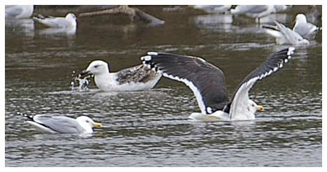

Great Black-backed Gull
An unusual visitor to the reservoir, one that is capable of turning up at any time of the year.

25/03/40 - Single bird with a pair of Herring Gulls.
15/12/57 - Single adult.
31/08/67 - Single bird.
07/03/98 - Single 1st winter bird with 49 Lesser Black-backed Gulls. (DWH).
14/10/98 - Single adult. (AJB).
14/12/98 - 2 birds. (AJB).
23/12/01 - Single bird
26/12/03 - Single adult bird
13/08/05 - Single bird
25/02/08 - 3 birds record count (KGH)
01/03/08 - Single bird
25/12/09 - Single 3rd winter bird
25/08/11 - Single bird
28/08/11 - Single bird
08/10/11 - Single immature
29/10/12 - Single bird
17/11/13 - Single adult
30/03/17 - Single 2nd winter stayed 3 days
12/12/17 - Single bird
2018 - Apart from an immature bird on 18/06, most if not all of the other 11 sightings in May, June, August and September relate to the same ringed adult bird. The ring P:62A (seen and photographed on 11/06 and 2/09) shows this bird to be ringed as a pullus in Portland Harbour in 2014 and has been previously reported on the Axe Estuary in 2016 and 2017
2019 - Recorded on an unprecedented 30 days across 6 different months. 4 adults on 28/03 (KGH) and 01/04 was a record number. 2 adults were regularly seen through March and April and the P:62A bird from last year was identified as one of the 2. Also on 25/02 an immature bird was seen with 2 adults
2020 - One or two adults recorded on 13 days across 9 different months
2021 - 2 adults on 17/03 stayed 2 days. 2 adults on 20/04 and one on 23/04. On 07/08 the previously recorded P:62A bird was seen along with a 1st year immature. 1 adult on 25/12
2022 - 2 adults on 07/03 and 08/03, one of which was colour ringed. 2 adults on 22/03 and 26/03. 2 adults 08/04 and 10/04. One adult seen daily from 07/08 to 16/08. joined by a juvenile on 09/08 and another adult on 14/08. then just a single adult seen on 15/08 and 16/08.
2023 - Recorded on 12 dates. 1-2 on 3 dates in April. P:62A was alone and identified on 16/07 and was seen again on 08/08 when accompanied by another adult and a juvenile. A different unrung pair were seen on 4 later dates in August, reducing to one unrung bird for a further 3 August dates.
2024 - Recorded on 6 dates, one in April, the rest in June. 1-2 adults including ringed P:62A on 14/06 (P:62A is now known to be 10 years old)
2025 - Recorded on 21 dates. The regular P:62A was first seen on 17/07 and 2 more dates in July. Then a pair of adults were seen on 03/08. From 18/08 various combinations of P:62A, one other adult and one juvenile were seen daily until 05/09. Additionally there were single adult records on 27/12 and 28/12